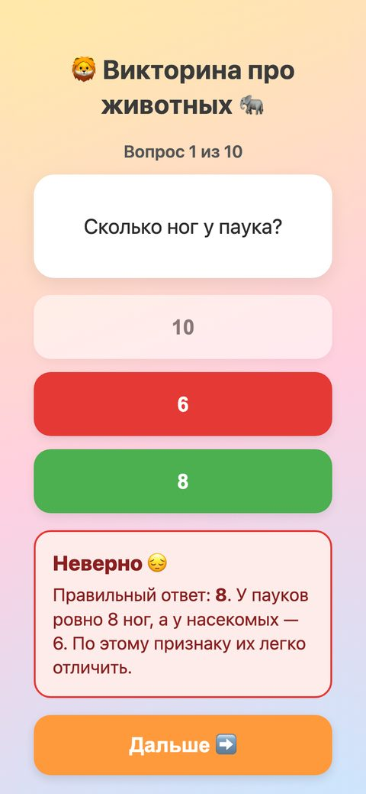

Бесплатные уроки · Qwen
Сделаешь игру прямо в чате и проверишь в ней факты.
Используй официальный сайт Qwen.
Qwen умеет делать страницы. Попроси игру — и через пару минут под ответом появится кнопка «превью»: викторина для ребёнка работает прямо в чате. Программировать не нужно. А учимся главному для детских игр: проверять не только кнопки, но и факты. Ошибку из викторины ребёнок запомнит как правду.

Впиши возраст и тему: животные, космос, сказки, правила дорожного движения. Каждый пункт — то, что важно ребёнку: крупные кнопки, правильный ответ сразу, счёт в конце.
Сделай викторину для ребёнка [возраст] лет про [тема] — одну HTML-страницу, которая работает на телефоне. 1. 10 вопросов, у каждого 3 варианта ответа. Вопросы каждый раз в случайном порядке. 2. Крупные кнопки — удобно нажимать детским пальцем. 3. После ответа сразу: «Верно!» зелёным или «Неверно, правильный ответ — …» красным, и одно короткое интересное объяснение. 4. Кнопка «Дальше» — к следующему вопросу. В конце — «Ты ответил на 7 из 10» и кнопка «Сыграть ещё раз». 5. Всё по-русски, без английских слов. Пришли весь код одним блоком.
Мы прогнали игру роботом на экране телефона: 10 вопросов из 12 в запасе, цвета и счёт верные, кнопки крупные, ни одного английского слова. С кнопками всё в порядке. Теперь — факты.
Ребёнок не станет проверять, сколько мёда делает пчела. Поэтому сначала попроси Qwen проверить себя — в том же чате:
Проверь факты в викторине: выпиши все вопросы, правильный ответ и объяснение. Для каждого отметь: «точно», «спорно» или «неверно» — и почему. Спорное и неверное исправь в коде, остальное не меняй. Пришли весь файл целиком.
Qwen выписал все 12 вопросов таблицей и сам нашёл две неточности. Поправил объяснение про летучих мышей. И отметил как спорное фразу про пчелу: «за свою жизнь собирает всего около чайной ложки мёда». Отметил правильно: по данным Национального совета по мёду США, пчела за жизнь делает 1/12 чайной ложки — в двенадцать раз меньше.
А вот что Qwen вписал вместо чайной ложки: «Чтобы сделать один килограмм мёда, пчёлы вместе посещают около двух миллионов цветков». Звучит солидно. Мы проверили на сайте того же совета по мёду: два миллиона цветков — на фунт мёда, это около 450 граммов. На килограмм — вдвое больше. Исправляя одну ошибку, нейросеть вписала новую.
Мы написали об этом и попросили убрать цифры, в которых Qwen не уверен:
Убери из объяснений все цифры, в которых ты не уверен, и напиши простые факты без чисел. Остальное не меняй. Пришли весь файл целиком.
Qwen убрал цифры у кита, гепарда, жирафа и пчёл, а точные оставил: 8 ног у паука, 6 у насекомых, 3 сердца у осьминога. Для детской игры это хороший ход: «гепард обгоняет любую машину в городе» ребёнку понятнее, чем «110 км/ч», и спорить тут не о чем.
Сделай викторину на тему, которую любит твой ребёнок или ученик. Сыграй одну партию, попроси Qwen проверить факты, а одну цифру проверь сам по источнику.
Урок рассчитан на сайт chat.qwen.ai на компьютере. Названия кнопок могут отличаться в приложении и после обновлений. Подписка на наше обучение не включает платные тарифы нейросетей.
Qwen — запросы урока проверены 3 октября 2026, модель Qwen3.7-Plus, режим «Авто». Игра проверена роботом на экране телефона. Данные о мёде — Национальный совет по мёду США, сверено 3 октября 2026.
Следующий урок — «Поиск в сети: ссылка и год». Найдёшь свежий факт на официальном сайте и проверишь год.
Читать следующий урок